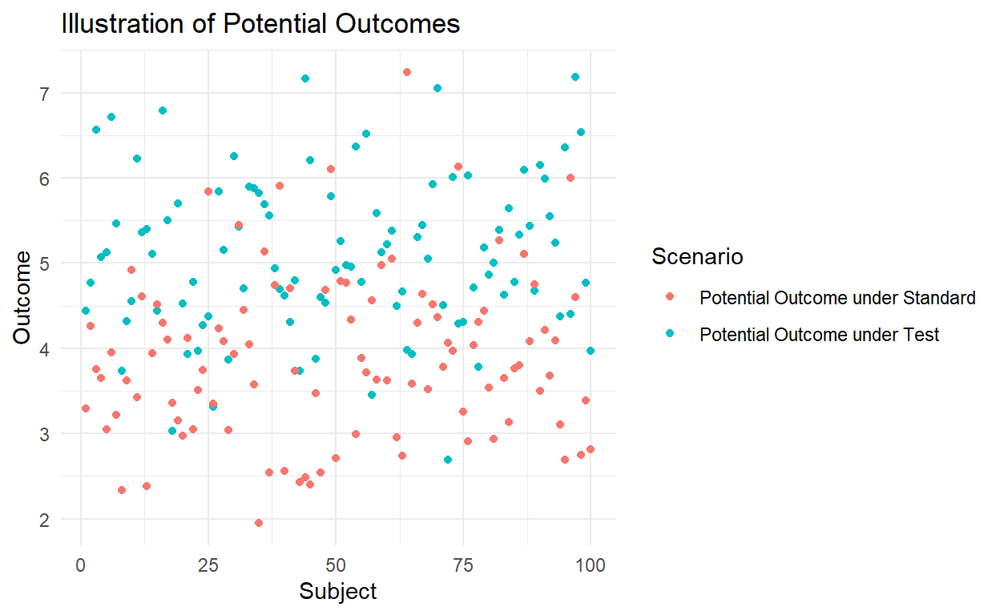

Module 1: Causal Inference Framework
The Potential Outcomes Framework
In causal inference, we consider what would happen to each subject under different treatment scenarios. For each patient: - Y(1): Outcome if treated with test chemotherapy - Y(0): Outcome if treated with standard chemotherapy
The fundamental problem of causal inference is that we only observe one of these potential outcomes for each subject.

Key Causal Assumptions
- Consistency: The observed outcome under each
treatment equals its potential outcome
- Requires well-defined interventions
- Treatment variation irrelevance
- Exchangeability: Treatment assignment is
independent of potential outcomes given covariates
- Also known as “no unmeasured confounding”
- Visualized through DAGs (Directed Acyclic Graphs)
- Positivity: Positive probability of receiving each
treatment for all covariate values
- Check through PS distributions
- Violations suggest structural zeroes
quiz(
question("Which assumption is being violated if certain types of patients always receive one treatment?",
answer("Consistency"),
answer("Positivity", correct = TRUE),
answer("Exchangeability"),
answer("Independence")
)
)Quiz
Module 2: Protocol Specification and Design
Target Trial Protocol Components
Each component requires careful consideration:
protocol <- tribble(
~Component, ~Description, ~Rationale,
"Population", "Veterans with advanced lung cancer", "Defines generalizability",
"Treatment", "Test vs Standard chemotherapy", "Must be well-defined interventions",
"Assignment", "Based on physician decision", "Informs confounding control strategy",
"Follow-up", "Until death or end of study", "Defines time zero and censoring",
"Outcome", "Overall survival", "Must be consistently measured",
"Causal contrast", "Hazard ratio", "Matches clinical interest"
)
print(protocol)Examining Time Zero
Understanding when follow-up starts is crucial:
# Distribution of diagnosis to treatment time
ggplot(veteran, aes(x = diagtime)) +
geom_histogram(bins = 30) +
labs(title = "Time from Diagnosis to Treatment",
x = "Days",
y = "Count") +
theme_minimal()Module 3: Advanced Covariate Assessment
Assessment of Confounding Structure
# Create correlation matrix of covariates
cont_vars <- veteran %>%
select(age, karno, diagtime) %>%
cor()
# Visualize correlations
corrplot::corrplot(cont_vars,
method = "color",
type = "upper",
addCoef.col = "black")
# Check covariate distributions by treatment
lapply(c("age", "karno", "diagtime"), function(var) {
formula <- as.formula(paste(var, "~ trt"))
t.test(formula, data = veteran)
})Balance Assessment Tools
# Love plot for standardized differences
cobalt::love.plot(ps_model,
data = veteran,
treat = veteran$trt,
thresholds = c(0.1, 0.2),
binary = "std")Module 4: Advanced Treatment Effect Estimation
1. IPW Cox Model with Stabilized Weights
# Calculate stabilized weights
num <- mean(veteran$trt == "test")
veteran$sw <- with(veteran,
ifelse(trt == "test",
num/ps,
(1-num)/(1-ps)))
# Fit stabilized weighted model
cox_sw <- coxph(Surv(time, status) ~ trt,
data = veteran,
weights = sw)
summary(cox_sw)2. Doubly Robust Estimation
# Outcome model
outcome_model <- coxph(Surv(time, status) ~ trt + age + karno + celltype + prior,
data = veteran)
# Combine with PS weighting
cox_dr <- coxph(Surv(time, status) ~ trt + age + karno + celltype + prior,
data = veteran,
weights = ipw_trim)
summary(cox_dr)3. Stratified Analysis
# Create PS quintiles
veteran$ps_strata <- cut(veteran$ps,
breaks = quantile(veteran$ps, probs = seq(0, 1, 0.2)),
labels = 1:5)
# Stratified Cox model
cox_strat <- coxph(Surv(time, status) ~ trt + strata(ps_strata),
data = veteran)
summary(cox_strat)Module 5: Advanced Diagnostics
Positivity Assessment
# PS overlap plot
ggplot(veteran, aes(x = ps, fill = trt)) +
geom_density(alpha = 0.5) +
geom_rug() +
labs(title = "Propensity Score Overlap",
x = "Probability of Test Treatment",
y = "Density") +
theme_minimal()
# Check extreme PS values
summary(veteran$ps[veteran$trt == "test"])
summary(veteran$ps[veteran$trt == "standard"])Covariate Balance Across PS Distribution
# Balance across PS strata
bal.plot(ps_model,
var.name = "age",
treat = veteran$trt,
data = veteran,
which = "both")Residual Diagnostics
# Martingale residuals
mart_res <- residuals(cox_ipw, type = "martingale")
plot(predict(cox_ipw), mart_res,
xlab = "Linear Predictor",
ylab = "Martingale Residuals")
abline(h = 0, col = "red")
# Schoenfeld residuals with smoother
cox.zph(cox_ipw) %>%
ggcoxzph()Module 6: Competing Risks Analysis
In survival analysis, competing risks occur when subjects can experience different types of events that prevent the occurrence of the event of interest.
Cumulative Incidence Functions
# Create competing risk data
# Assume death from cancer (1) vs other causes (2)
veteran$status_cr <- sample(c(1, 2),
size = nrow(veteran),
replace = TRUE,
prob = c(0.7, 0.3))
# Fit competing risks model
cif <- cuminc(veteran$time,
veteran$status_cr,
veteran$trt)
# Plot
plot(cif,
xlab = "Time",
ylab = "Cumulative Incidence",
main = "Competing Risks Analysis")Fine-Gray Model
# Fit Fine-Gray model for cancer death
fg_model <- crr(veteran$time,
veteran$status_cr,
veteran$trt,
failcode = 1)
print(fg_model)Module 7: Sensitivity Analyses
E-value Calculation
The E-value quantifies the minimum strength of unmeasured confounding needed to explain away the observed effect.
# Function to calculate E-value for hazard ratio
calculate_e_value <- function(hr) {
hr_to_rr <- hr # For rare outcomes, HR ≈ RR
e_value <- hr_to_rr + sqrt(hr_to_rr * (hr_to_rr - 1))
return(e_value)
}
# Calculate E-value for our main effect
e_val <- calculate_e_value(exp(coef(cox_ipw)[1]))
print(paste("E-value:", round(e_val, 2)))Missing Data Sensitivity
# Create some missing data
veteran_missing <- veteran %>%
mutate(karno = ifelse(runif(n()) < 0.1, NA, karno))
# Compare complete case vs multiple imputation
library(mice)
imp <- mice(veteran_missing, m = 5)
fit_mi <- with(imp, coxph(Surv(time, status) ~ trt + age + karno))
pooled_results <- pool(fit_mi)
summary(pooled_results)Practice Exercises
- Implement a marginal structural model
- Conduct a formal mediation analysis
- Apply different weight trimming approaches
- Create custom balance diagnostics
# Your code hereReferences and Further Reading
- Hernán MA, Robins JM (2020). Causal Inference: What If. Boca Raton: Chapman & Hall/CRC.
- Fine JP, Gray RJ (1999). A proportional hazards model for the subdistribution of a competing risk.
- Austin PC (2011). An introduction to propensity score methods for reducing confounding in observational studies.